Gîte ou chambres d’hôtes de 15 personnes. Au cœur du célèbre vignoble jurassien,
du haut de son éperon rocheux, le village pittoresque domine la vallée.
15 pers.5 chambres dont une suite de 54 m², lits modulables
5salles de bain privées, dont 2 avec baignoire
Village classéL’un des Plus Beaux Villages de France
300 m²Maison en pierre sur 2 étages
15 pers.5 chambres dont une suite de 54 m², lits modulables
5salles de bain privées, dont 2 avec baignoire
Village classéL’un des Plus Beaux Villages de France
La maison
Une ancienne boucherie devenue maison d’hôtes
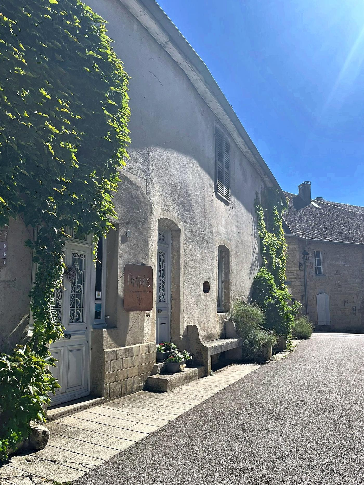
L’Histoire
Construite au cœur d’un village médiéval, cette bâtisse chargée d’histoire fut
autrefois une ferme, puis une boucherie et une petite galerie éphémère d’artistes
amateurs.
En 2010, en grande partie rénovée, elle devient la première maison d’hôtes de
Château-Chalon. En 2016, nous reprenons le flambeau à plusieurs amis, avec l’envie
d’en faire un lieu d’accueil chaleureux et convivial où l’on aime se retrouver.
Nous avons choisi de préserver son âme et son caractère historique tout en y
apportant une touche contemporaine et moderne. Au fil des pièces, vous découvrirez
ainsi le témoignage de son passé : la devanture de l’ancienne
boucherie, la porte traditionnelle ornée de sa clochette, les
carreaux de ciment de l’époque… autant de détails qui racontent
l’histoire de cette maison et lui donnent tout son charme !
Répartie sur plusieurs niveaux entièrement rénovés, la maison offre de grands
volumes et dispose de 5 grandes chambres, chacune équipée de sa propre salle de
bain et de toilettes privatives, pour vous garantir confort et intimité pendant
votre séjour.
« Notre devise : naturellement simples et sans chichis, nous vous accueillons
avec le sourire et grand plaisir. »
Linge de lit en lin lavé et serviettes de bain en coton biologique
Produits écolabellisés à disposition
Animaux acceptés en gîte (avec supplément)
Stationnement gratuit (parking communal)
Local vélos (8 places)
…
Nous trouver
1 rue de l’Église, 39210 Château-Chalon.
L’affichage de la carte dépose des cookies Google.
Les chambres
Toute la maison ou juste une chambre
Notre maison est disponible en formule gîte ou chambres d’hôtes. Elle est faite pour
accueillir jusqu’à 15 personnes, avec ses 5 chambres (salle d’eau ou salle de bain)
dont sa suite familiale.
Jusqu’à 15 personnes
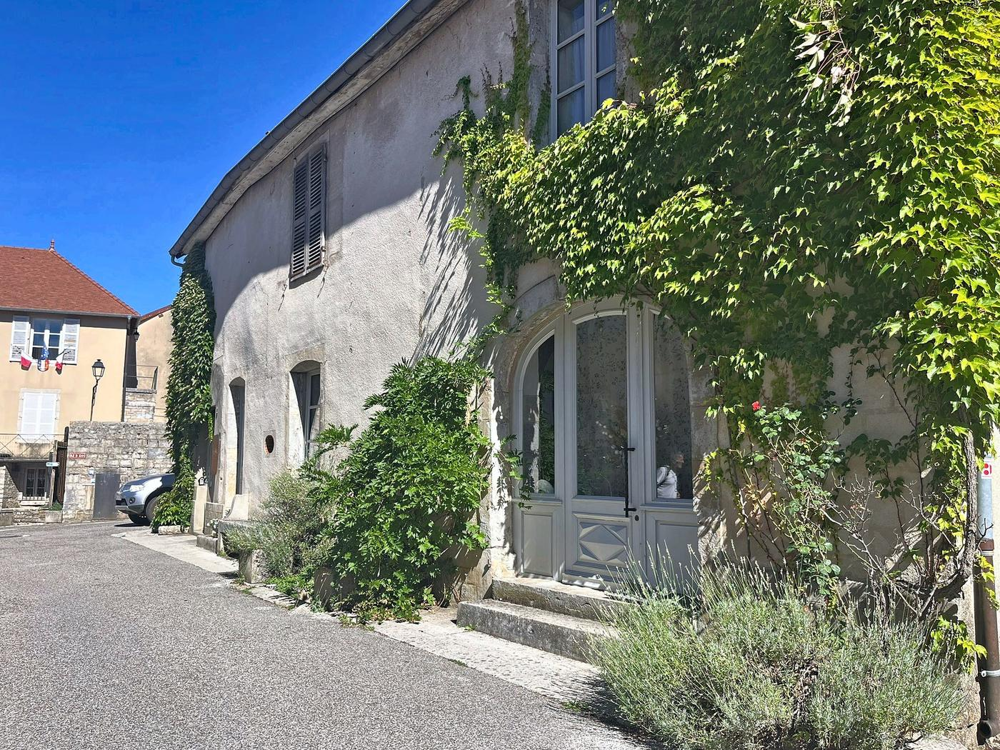
La maison entière
GÎTE 300 M² · JUSQU’À 15 PERSONNES
Toute la maison pour vous : 300 m² sur deux étages, cinq chambres, deux cuisines, un salon avec cheminée et un jardin clos.
5 chambres dont une suite familiale
5 salles de bain privées, dont 2 avec baignoire
2 cuisines équipées
Salon avec cheminée
Jardin clos
Maison sur 2 étages
Tarif sur demande
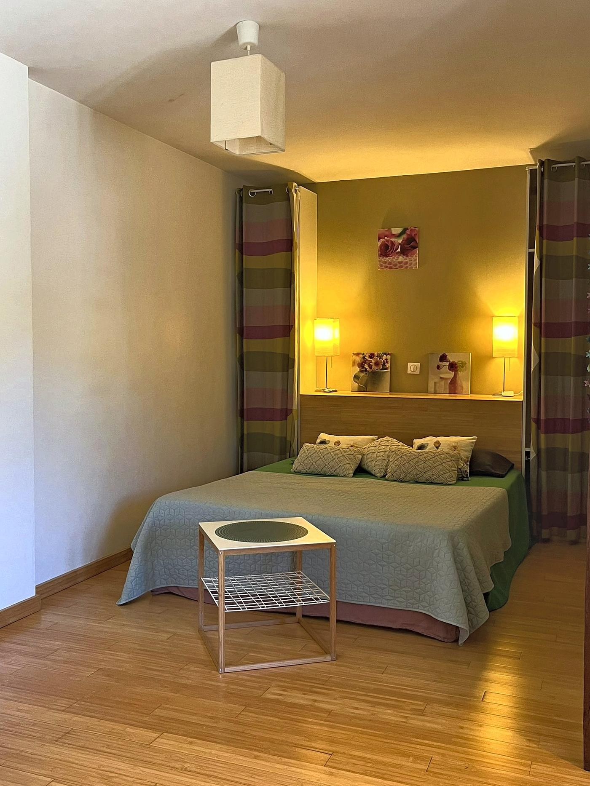
Chambre 1 — En Messepierre
CHAMBRE · 27 M² · 2 PERSONNES
Vingt-sept mètres carrés, douche balnéo, deux dressings et un coin salon spacieux.
Douche balnéo et double vasque
WC séparés
Deux dressings
à partir de 92 € / nuit
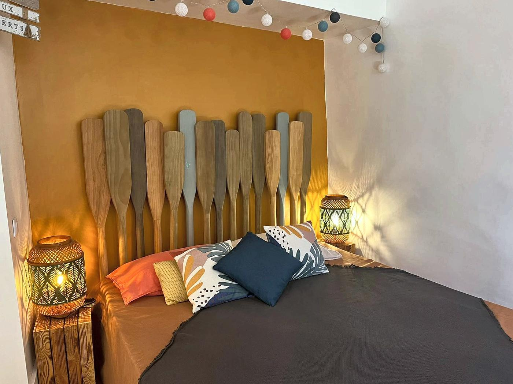
Chambre 2 — La Mercantine
CHAMBRE · 36 M² · 3 PERSONNES
Trente-six mètres carrés, baignoire et douche : la plus grande des chambres, jusqu’à trois personnes.
Baignoire et douche
WC séparés
Coin salon avec canapé
à partir de 96 € / nuit
54 m² · la plus grande
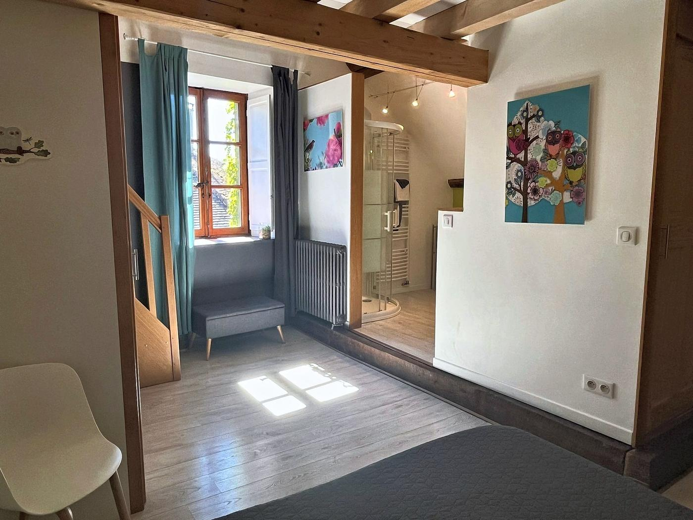
Chambre 3 — Les Terrasses
SUITE · 54 M² · 6 PERSONNES
Cinquante-quatre mètres carrés en deux pièces séparées : un salon privatif et une chambre avec sa mezzanine.
Jusqu’à 6 personnes
Baignoire et douche
Deux pièces séparées
à partir de 110 € / nuit
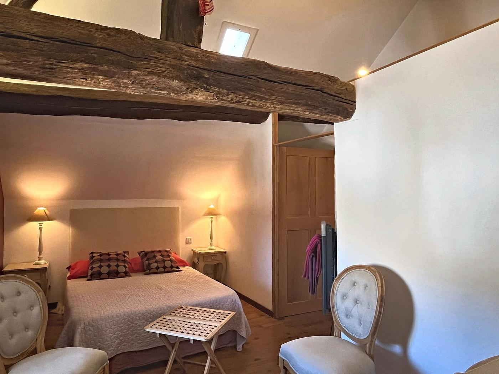
Chambre 4 — Le Colombier
CHAMBRE · 17 M² · 2 PERSONNES
Dix-sept mètres carrés, salle de douche indépendante et petit coin salon.
Salle de douche privée
WC séparé
Petit coin salon
à partir de 82 € / nuit
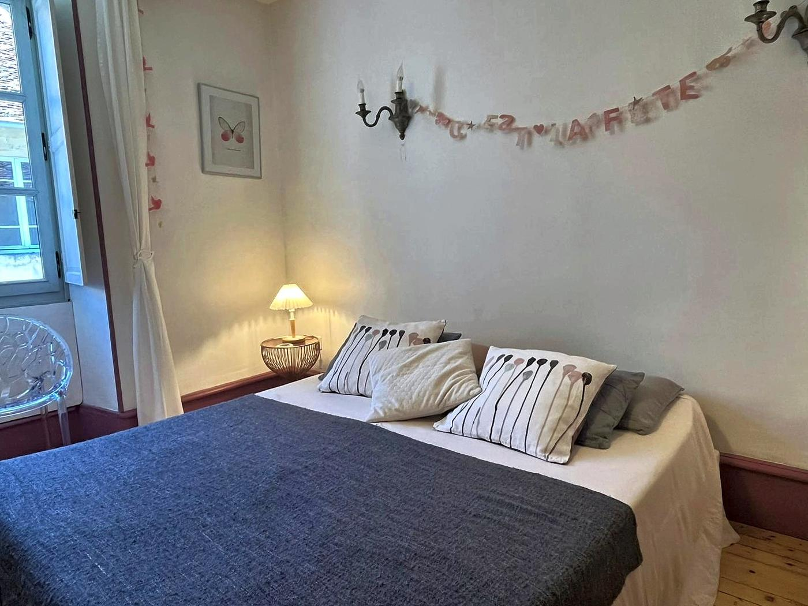
Chambre 5 — Le Chanaie
CHAMBRE · 20 M² · 2 PERSONNES
Vingt mètres carrés modulables : deux lits simples ou un lit Queen size 160 × 200.
Salle de douche privée
WC séparé
Lits modulables
à partir de 82 € / nuit
Chambre 1 — En Messepierre
CHAMBRE · 27 M² · 2 PERSONNES
Vingt-sept mètres carrés, douche balnéo, deux dressings et un coin salon spacieux.
Douche balnéo et double vasque
WC séparés
Deux dressings
à partir de 92 € / nuit
Chambre 2 — La Mercantine
CHAMBRE · 36 M² · 3 PERSONNES
Trente-six mètres carrés, baignoire et douche : la plus grande des chambres, jusqu’à trois personnes.
Baignoire et douche
WC séparés
Coin salon avec canapé
à partir de 96 € / nuit
54 m² · la plus grande
Chambre 3 — Les Terrasses
SUITE · 54 M² · 6 PERSONNES
Cinquante-quatre mètres carrés en deux pièces séparées : un salon privatif et une chambre avec sa mezzanine.
Jusqu’à 6 personnes
Baignoire et douche
Deux pièces séparées
à partir de 110 € / nuit
Chambre 4 — Le Colombier
CHAMBRE · 17 M² · 2 PERSONNES
Dix-sept mètres carrés, salle de douche indépendante et petit coin salon.
Salle de douche privée
WC séparé
Petit coin salon
à partir de 82 € / nuit
Chambre 5 — Le Chanaie
CHAMBRE · 20 M² · 2 PERSONNES
Vingt mètres carrés modulables : deux lits simples ou un lit Queen size 160 × 200.
Salle de douche privée
WC séparé
Lits modulables
à partir de 82 € / nuit
Chambre 1 — En Messepierre
CHAMBRE · 27 M² · 2 PERSONNES
Vingt-sept mètres carrés, douche balnéo, deux dressings et un coin salon spacieux.
Douche balnéo et double vasque
WC séparés
Deux dressings
à partir de 92 € / nuit
Chambre 2 — La Mercantine
CHAMBRE · 36 M² · 3 PERSONNES
Trente-six mètres carrés, baignoire et douche : la plus grande des chambres, jusqu’à trois personnes.
Baignoire et douche
WC séparés
Coin salon avec canapé
à partir de 96 € / nuit
54 m² · la plus grande
Chambre 3 — Les Terrasses
SUITE · 54 M² · 6 PERSONNES
Cinquante-quatre mètres carrés en deux pièces séparées : un salon privatif et une chambre avec sa mezzanine.
Jusqu’à 6 personnes
Baignoire et douche
Deux pièces séparées
à partir de 110 € / nuit
Chambre 4 — Le Colombier
CHAMBRE · 17 M² · 2 PERSONNES
Dix-sept mètres carrés, salle de douche indépendante et petit coin salon.
Salle de douche privée
WC séparé
Petit coin salon
à partir de 82 € / nuit
Chambre 5 — Le Chanaie
CHAMBRE · 20 M² · 2 PERSONNES
Vingt mètres carrés modulables : deux lits simples ou un lit Queen size 160 × 200.
Salle de douche privée
WC séparé
Lits modulables
à partir de 82 € / nuit
Prestations supplémentaires
Ce que nous proposons nous-mêmes
Pour compléter votre séjour, nous proposons plusieurs prestations
complémentaires :
Toute l’année
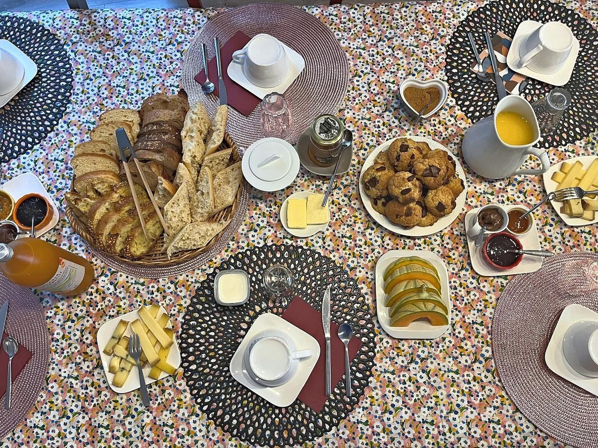
Petits-déjeuners maison
Servis dans la cuisine-salle à manger, avec des produits frais et faits maison.
Toute l’année
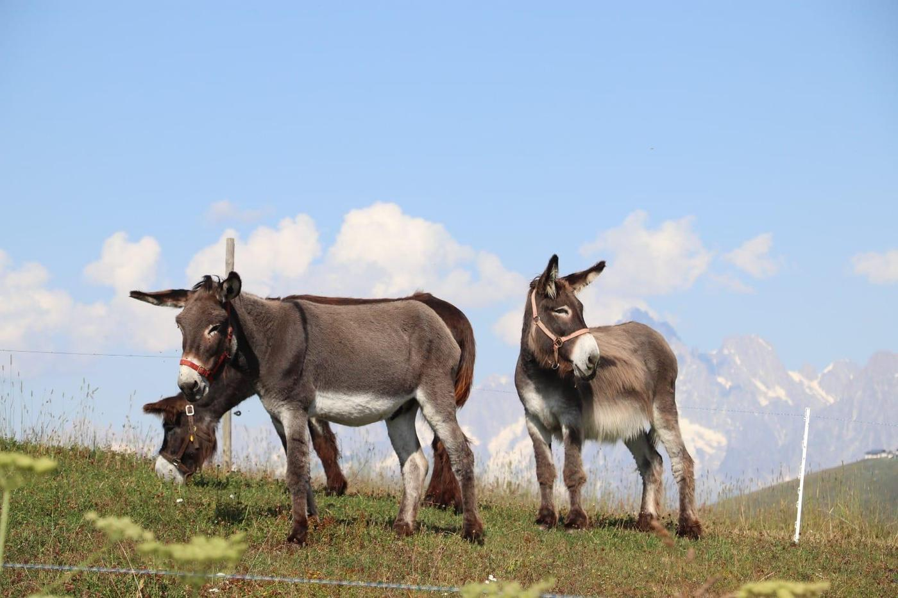
Randonnée avec ânes de bât
Trois ânes, un sentier et le Jura qui s’ouvre devant vous.
Hiver
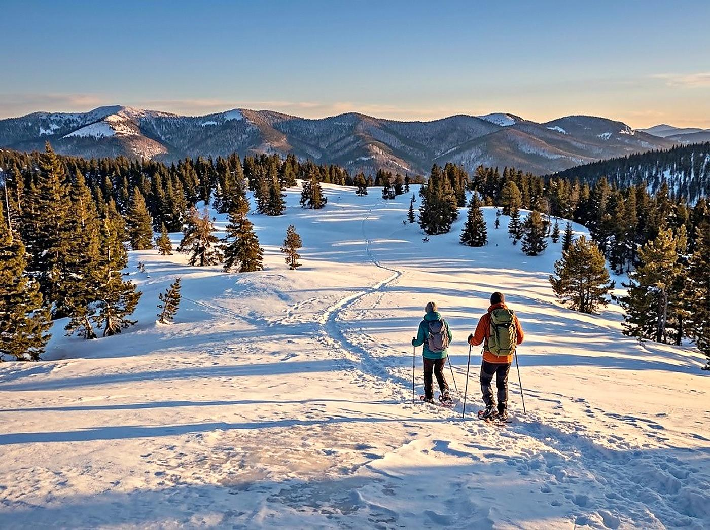
Randonnée en raquettes
Randonnée dans le Haut-Jura, accompagnée d’un guide de moyenne montagne.
Toute l’année
Autres prestations sur demande
Caves de Château-Chalon, artisans, pêcheurs : le réseau que nous partageons avec vous.
Toute l’année
Petits-déjeuners maison
Servis dans la cuisine-salle à manger, avec des produits frais et faits maison.
Toute l’année
Randonnée avec ânes de bât
Trois ânes, un sentier et le Jura qui s’ouvre devant vous.
Hiver
Randonnée en raquettes
Randonnée dans le Haut-Jura, accompagnée d’un guide de moyenne montagne.
Toute l’année
Autres prestations sur demande
Caves de Château-Chalon, artisans, pêcheurs : le réseau que nous partageons avec vous.
Toute l’année
Petits-déjeuners maison
Servis dans la cuisine-salle à manger, avec des produits frais et faits maison.
Toute l’année
Randonnée avec ânes de bât
Trois ânes, un sentier et le Jura qui s’ouvre devant vous.
Hiver
Randonnée en raquettes
Randonnée dans le Haut-Jura, accompagnée d’un guide de moyenne montagne.
Toute l’année
Autres prestations sur demande
Caves de Château-Chalon, artisans, pêcheurs : le réseau que nous partageons avec vous.
Galerie
La maison, le village et le Jura
Cliquez sur une photo pour l’agrandir.
Activités
Une région riche, avec beaucoup de choses à découvrir
Château-Chalon, berceau du Vin Jaune, est au cœur du vignoble jurassien. Les
grands lacs sont à côté, les pistes du Haut-Jura à 1 h.
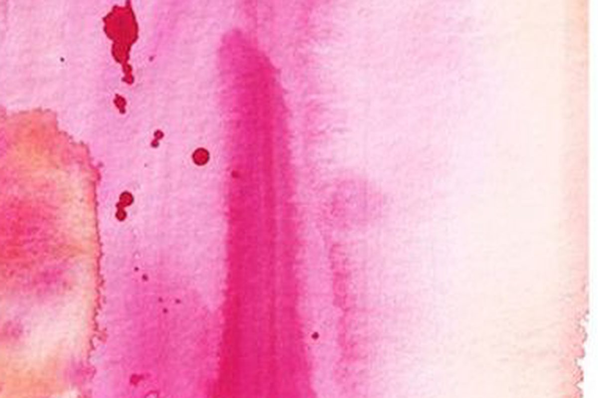
Vins & Caveaux
Le berceau du Vin Jaune, à pied depuis la maison
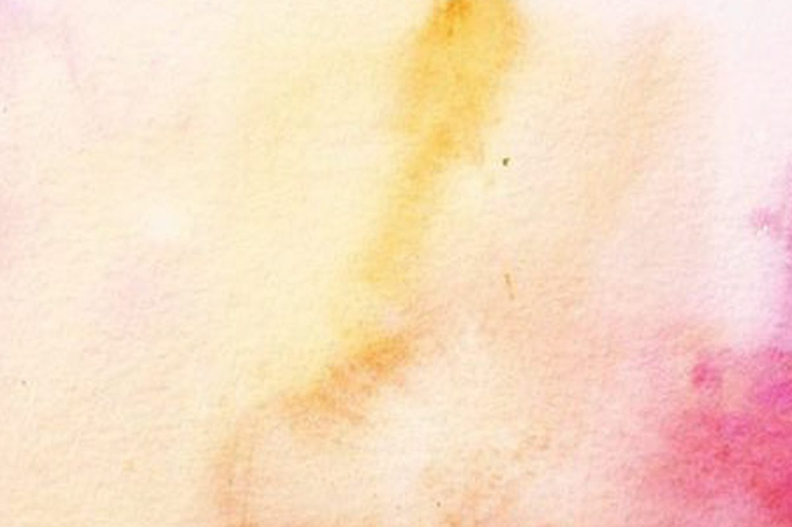
Visites & Patrimoine
Abbayes, grottes, salines classées UNESCO
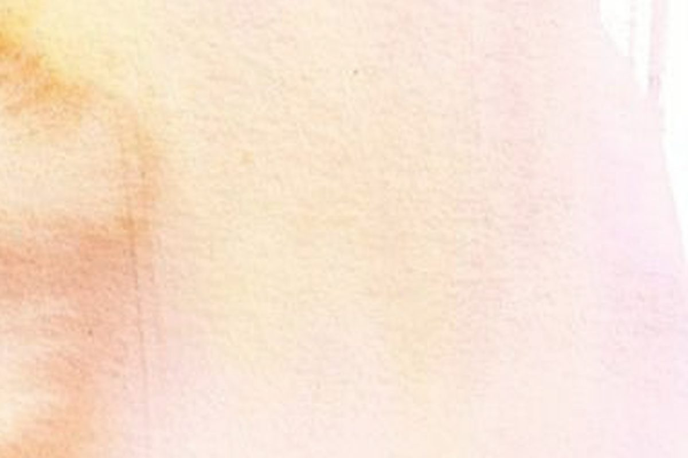
Étangs, Lacs & Cascades
Eaux turquoise, reculées et belvédères
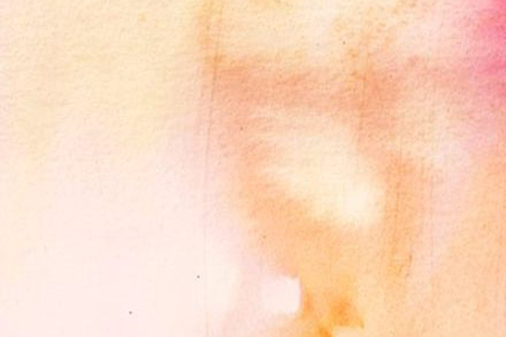
Restaurants
Comté, morilles et une étoile Michelin à trente minutes
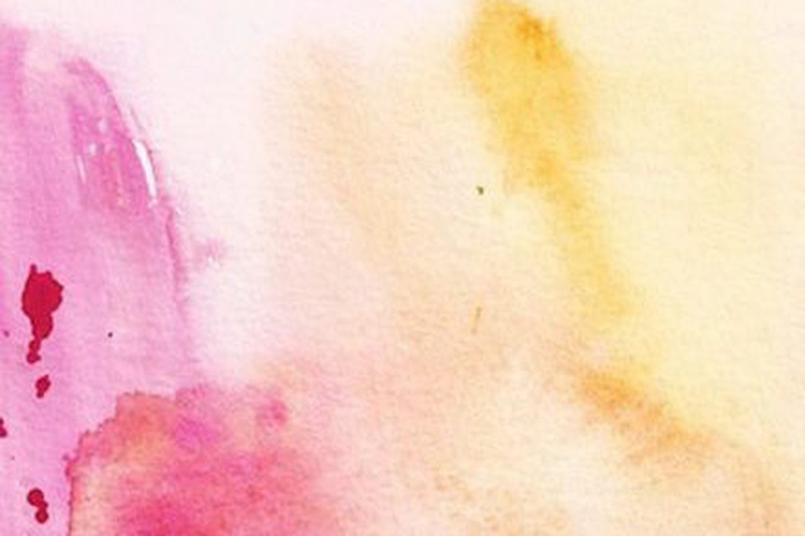
Activités sportives
Des sentiers au départ du village jusqu’au Haut-Jura
Vins & Caveaux
Le berceau du Vin Jaune, à pied depuis la maison
Visites & Patrimoine
Abbayes, grottes, salines classées UNESCO
Étangs, Lacs & Cascades
Eaux turquoise, reculées et belvédères
Restaurants
Comté, morilles et une étoile Michelin à trente minutes
Activités sportives
Des sentiers au départ du village jusqu’au Haut-Jura
Vins & Caveaux
Le berceau du Vin Jaune, à pied depuis la maison
Visites & Patrimoine
Abbayes, grottes, salines classées UNESCO
Étangs, Lacs & Cascades
Eaux turquoise, reculées et belvédères
Restaurants
Comté, morilles et une étoile Michelin à trente minutes
Activités sportives
Des sentiers au départ du village jusqu’au Haut-Jura
Contact
Écrivez-nous, nous répondons
Marie affiche un taux de réponse de 100 % sur Airbnb depuis huit ans. En direct, vous
lui parlez et vous évitez les frais de service.
Rez-de-chaussée, cheminée en marbre avec insert, des espaces ouverts et cosy à la fois.
Ce qui vous attend
Une cheminée en marbre avec insertAvec sa réserve de bois à proximité. Elle offre chaleur et convivialité quand les jours raccourcissent.
Les carreaux de cimentCeux de la ferme, puis de la boucherie du village : ils ont traversé le temps.
Connecté à la salle à mangerAu rez-de-chaussée, on passe de l’apéro dans le canapé à la table du repas, sans traverser toute la maison !
Pour des soirées interminablesDes jeux sont à votre disposition et nous vous proposons la location d’un escape game pour ambiancer vos convives !
WC au rez-de-chausséeAjouté pour vous éviter de remonter dans les chambres.
En quelques mots
Cet espace est le cœur battant de la maison, le point de ralliement : il est chaleureux en hiver et reste frais l’été, de par sa situation au-dessus de la cave voûtée.
Réponse sous 24 h · un taux de réponse de 100 % sur Airbnb depuis huit ans · en direct, sans frais de service
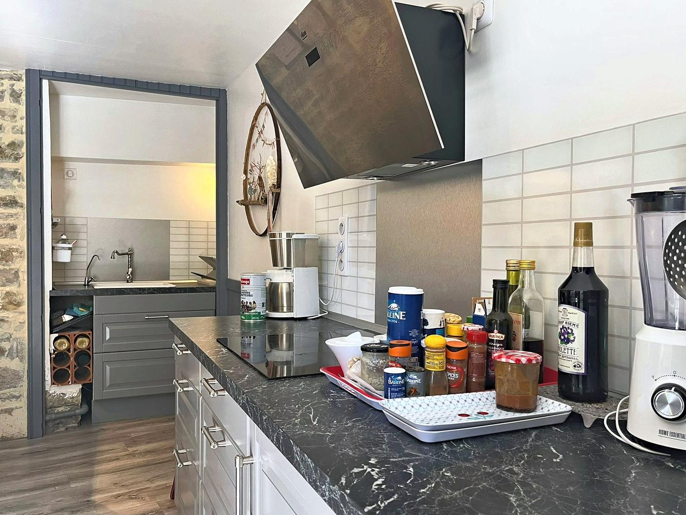
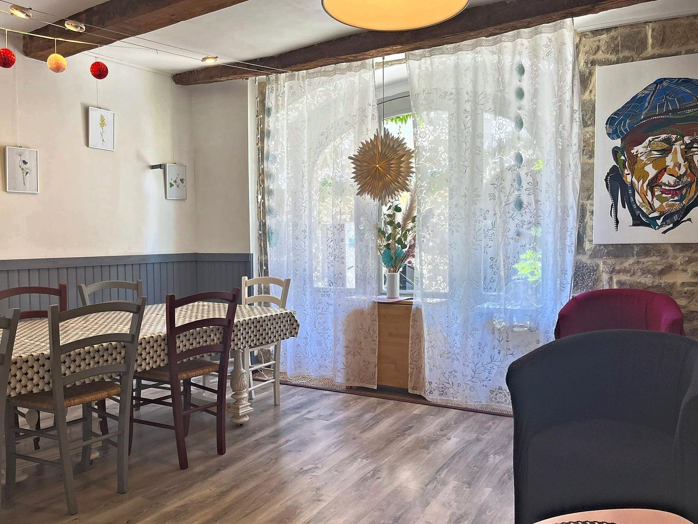
La Salle à manger
Spacieuse et lumineuse, elle vous permet de vous retrouver autour d’une grande tablée, en famille ou entre amis.
Ancienne boutique de la boucherie, au rez-de-chaussée : cuisine équipée et grande tablée.
Ce qui vous attend
Une cuisine entièrement équipéeDeux réfrigérateurs, lave-vaisselle, four, plaque vitrocéramique, micro-ondes, robots blender-mixeur, grille-pain, cafetières à dosettes et à filtre, appareils à raclette, à fondue, pierrade, crêpières… des équipements proportionnés à la taille de votre groupe.
Un espace ouvertCeux qui cuisinent peuvent profiter de la présence des autres.
Au rez-de-chausséeL’endroit où vous passez le plus de temps est bien la pièce de vie : elle doit être la plus agréable possible. Lumineuse, elle donne accès à la rue piétonne par sa grande baie vitrée.
En formule chambres d’hôtesElle devient la grande tablée des petits déjeuners ou de la table d’hôtes.
En quelques mots
Cette grande pièce en pierre chargée d’histoire reste fraîche l’été et chaleureuse l’hiver, par ses différentes expositions sud-ouest. Elle est pensée pour votre groupe de 15 personnes.
Réponse sous 24 h · un taux de réponse de 100 % sur Airbnb depuis huit ans · en direct, sans frais de service
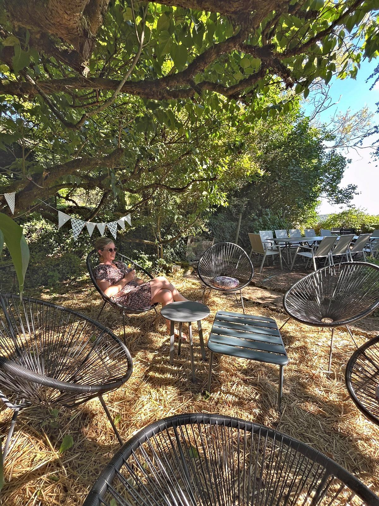
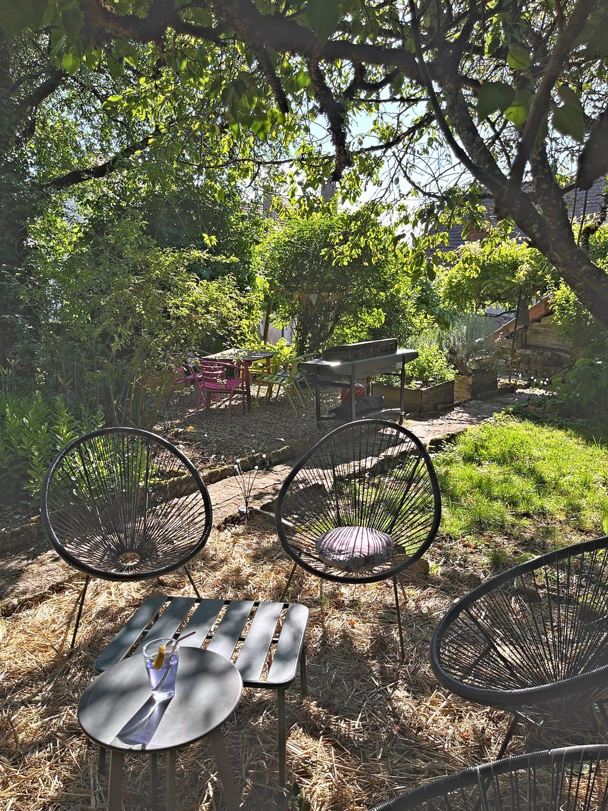
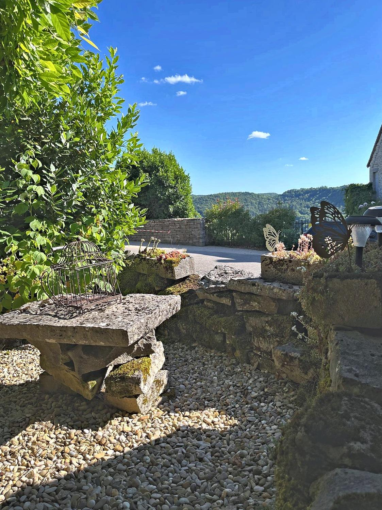
Le Jardin
Un petit jardin secret et bucolique, à l’abri des regards.
Non attenant à la maison mais à quelques pas seulement, il est entièrement équipé pour que vous en profitiez au maximum.
Ce qui vous attend
Clos, à l’abri des regardsVous êtes en plein cœur du village et pourtant au calme, sans vis-à-vis.
Le jardin des 5 sensUn jardin sensoriel et ses espaces différenciés : paille, copeaux de bois, cailloux, herbe, dallage en pierre, autant de petits coins différents dans un même jardin.
Équipé pour des moments de détenteFauteuils, transats, hamac, barbecue à gaz et plancha, jeux pour enfants, lampes solaires et lampes nomades Fermob, des paniers à disposition avec de la vaisselle en bambou, des bacs de plantes aromatiques pour vos grillades… tout y est pour vous faciliter la vie et vous permettre d’en profiter pleinement !
Vue sur la reculée et l’égliseLe jardin offre une jolie vue sur la reculée et l’ancien bourg castral.
En quelques mots
Entre ombre et soleil, cet écrin de verdure vous offrira un merveilleux moment de détente, seul ou en groupe.
Réponse sous 24 h · un taux de réponse de 100 % sur Airbnb depuis huit ans · en direct, sans frais de service
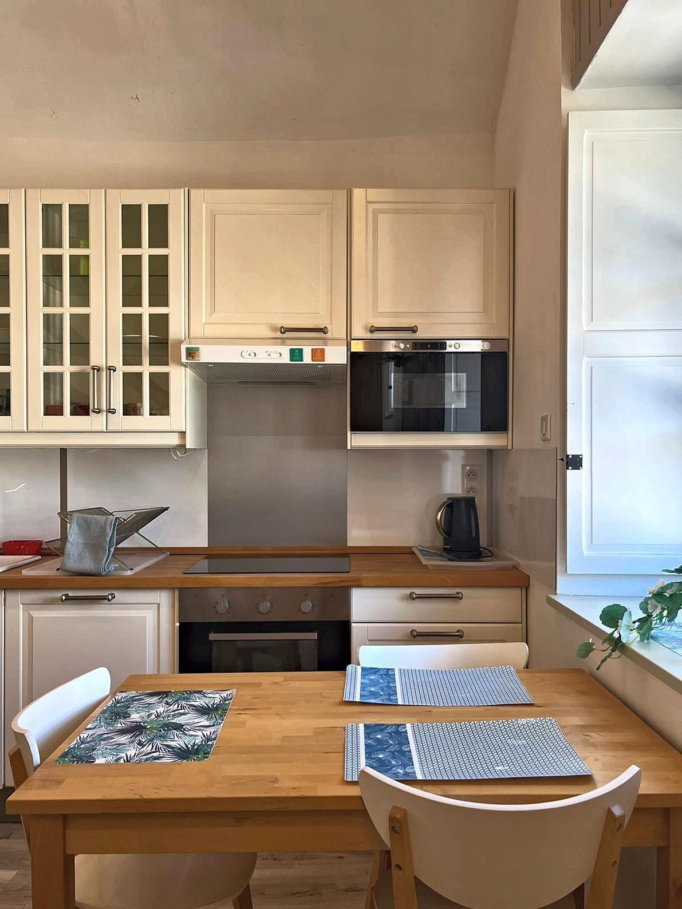
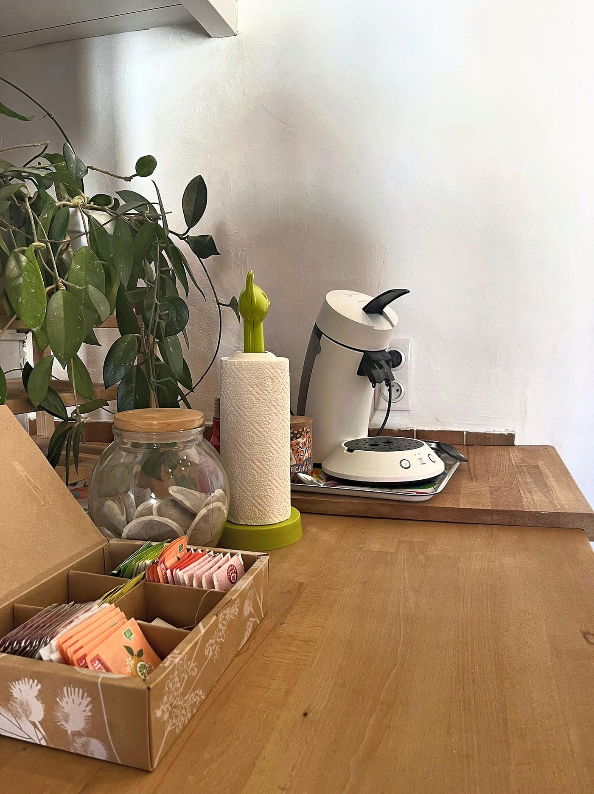
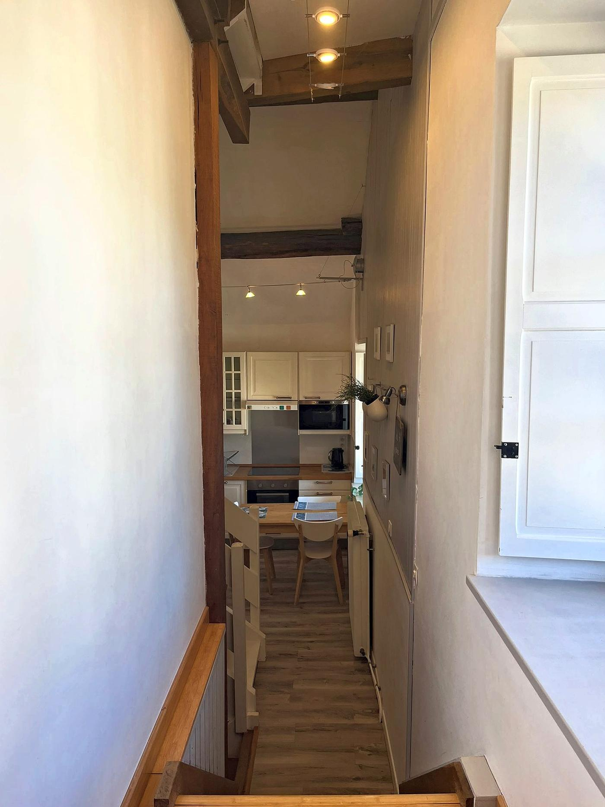
La Cuisine secondaire
Au 1er étage, une cuisine équipée supplémentaire, bientôt transformée en espace lounge, jeux et projection (pour l’été 2027).
Au 1er étage : une cuisine équipée supplémentaire, bientôt espace lounge et jeux.
Ce qui vous attend
Un espace de convivialitéCet espace mezzanine, ouvert sur l’escalier central de la maison, vous offre de quoi prendre un verre ou jouer au baby-foot pendant que les adultes sont à l’apéro dans le salon ou au jardin !
En quelques mots
Un espace supplémentaire qui garantit de partager cette maison à plusieurs sans se gêner.
Réponse sous 24 h · un taux de réponse de 100 % sur Airbnb depuis huit ans · en direct, sans frais de service
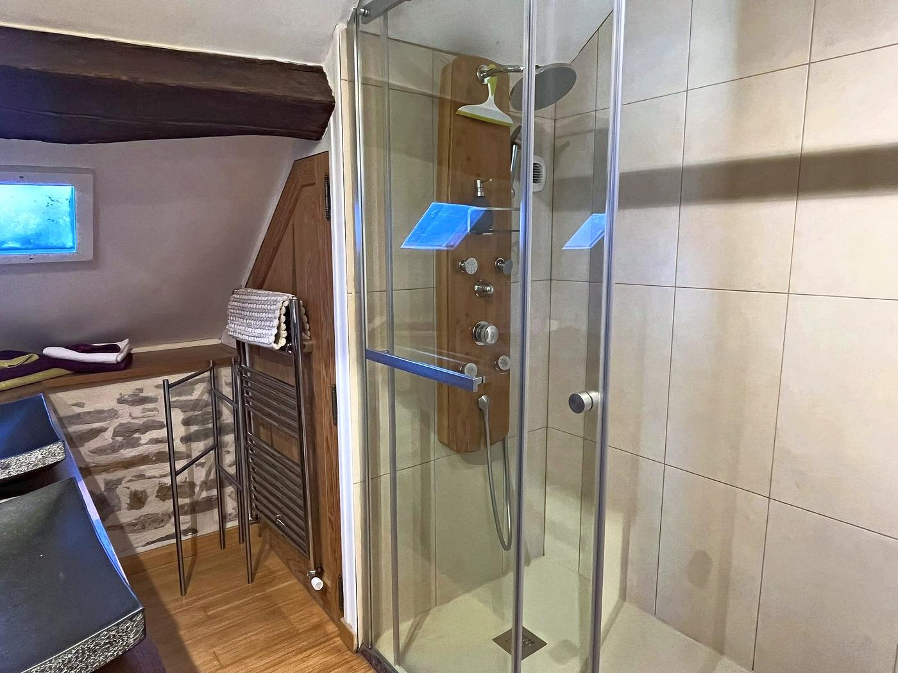
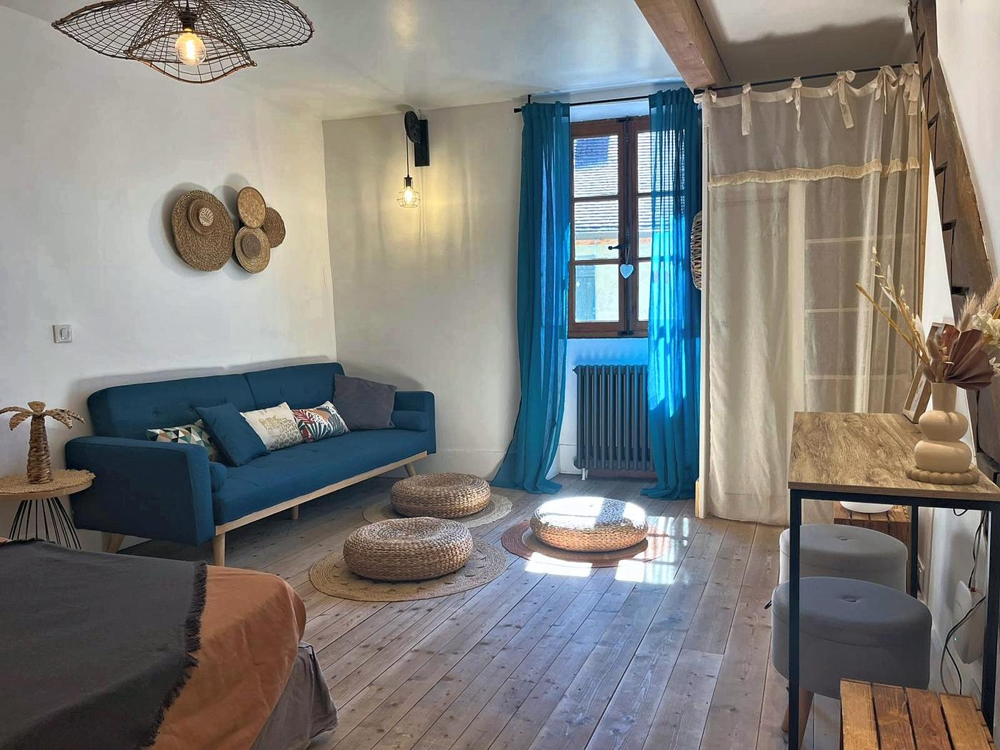
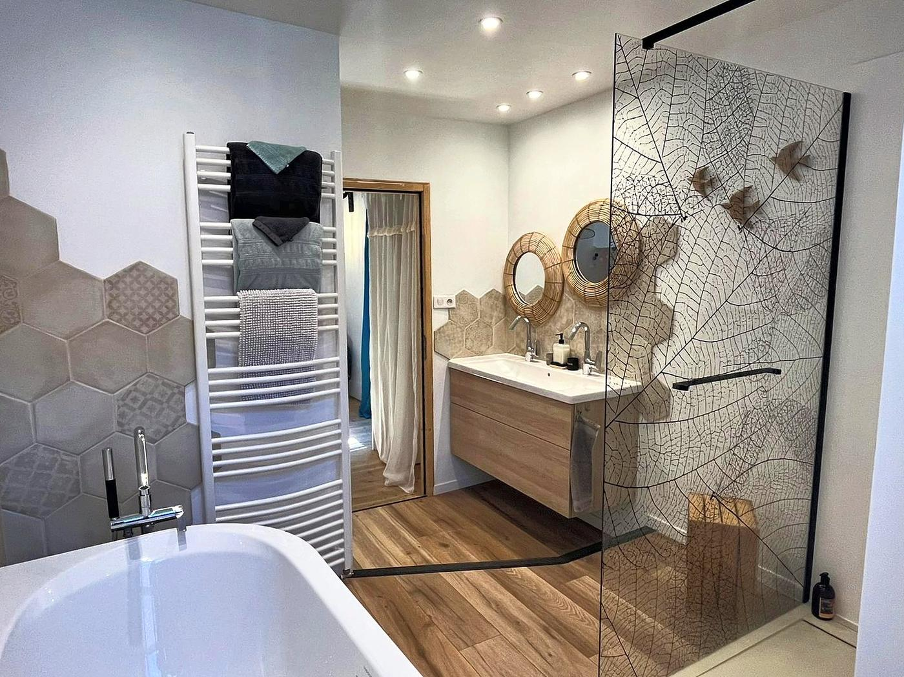
La maison entière
Toute la maison pour vous et personne d’autre.
GÎTE 300 M² · JUSQU’À 15 PERSONNES·4,93/5 · 87 avis
Tarif sur demande
Ce qui vous attend
300 m² sur deux étages4 chambres et 1 suite familiale, deux cuisines, un salon avec cheminée et le jardin clos.
Cinq salles de bain et six WCChacun sa chambre, chacun sa salle d’eau : c’est ce qui fait tenir un groupe de quinze ou différents hôtes.
Des lits qui s’adaptentLes lits simples se jumellent en lits doubles selon la composition du groupe. Trois lits bébé disponibles.
À l’abri des regardsUn jardin clos, avec barbecue, plancha et vue sur la reculée de Baume-les-Messieurs.
La formule des retrouvaillesFamilles et groupes d’amis : tout le monde se réunit autour de la grande table.
La maison
Vous prenez la maison entière : les 300 m², les cinq chambres avec leur salle de bain et leur WC privés, les deux cuisines, le salon et sa cheminée avec insert, le jardin clos.
C’est la formule des familles et des amis qui se retrouvent : chacun a sa chambre et sa salle de bain ; tout le monde se réunit autour de la grande table. Les lits simples se jumellent en lits doubles selon la composition du groupe.
Ce qu’en disent nos hôtes
« Charmante maison ancienne avec des chambres confortables et soigneusement rénovées et un accès au jardin »
« Maison très bien tenue, chambre décorée avec goût, cuisine à disposition et jardin bucolique »
Tarif sur demande Écrivez-nous, nous répondons sous 24 h
Compris dans le prix
Draps et linge de maison
Ménage final
En supplément
Petits déjeuners maison, sur demande
Taxe de séjour
Supplément chauffage de septembre à mai
Informations pratiques
Arrivée : Autonome (boîte à clés sécurisée)
Départ : Midi
Animaux acceptés, avec supplément
Établissement non-fumeur
Parking public à quelques pas
Français, anglais
Réponse sous 24 h · un taux de réponse de 100 % sur Airbnb depuis huit ans · en direct, sans frais de service
Chambre 1 — En Messepierre
Salle de bain avec douche balnéo et WC privés, dressing.
CHAMBRE · 27 M² · 2 PERSONNES·4,93/5 · 87 avis
à partir de 92 € par nuit
Ce qui vous attend
ÉquipementsLit Queen size 160 × 200, douche balnéo, double vasque, un bureau, draps en lin et serviettes en coton bio inclus, TV écran plat.
En formule chambres d’hôtesPetits déjeuners maison, draps et ménage compris.
Au cœur d’un des Plus Beaux Villages de FranceChâteau-Chalon, berceau du Vin Jaune.
4,93/5 sur 87 avisSuperhôte depuis huit ans, 100 % de taux de réponse.
La chambre
Vingt-sept mètres carrés avec sa salle de bain à double vasque, sa douche balnéo à jets massants et ses toilettes séparées. Un lit Queen size de 160 × 200 et un coin salon spacieux.
Deux dressings, un pour Madame et un pour Monsieur, plus un bureau. Draps en lin, serviettes en coton bio et sèche-cheveux fournis.
Ce qu’en disent nos hôtes
« Un hébergement très confortable dans un bel emplacement. Nous avions une chambre confortable et spacieuse »
« Petit déjeuner copieux et qu’avec des produits frais et faits maison »
Réponse sous 24 h · un taux de réponse de 100 % sur Airbnb depuis huit ans · en direct, sans frais de service
Chambre 2 — La Mercantine
La plus grande des chambres, avec sa baignoire, son coin salon et de la place pour une troisième personne.
CHAMBRE · 36 M² · 3 PERSONNES·4,93/5 · 87 avis
à partir de 96 € par nuit
Ce qui vous attend
ÉquipementsLit Queen size 160 × 200 ou 2 lits simples 80 × 200, canapé convertible 120 × 200, salle de bain indépendante avec baignoire et douche, toilettes séparées, draps en lin et serviettes en coton bio inclus, coin salon avec canapé.
En formule chambres d’hôtesPetits déjeuners maison, draps et ménage compris.
Au cœur d’un des Plus Beaux Villages de FranceChâteau-Chalon, berceau du Vin Jaune.
4,93/5 sur 87 avisSuperhôte depuis huit ans, 100 % de taux de réponse.
La chambre
Trente-six mètres carrés, la plus grande des chambres. Salle de bain indépendante avec baignoire et douche, toilettes séparées et un coin salon avec canapé.
Un lit Queen size de 160 × 200. Draps en lin, serviettes et sèche-cheveux fournis.
Ce qu’en disent nos hôtes
« Un hébergement très confortable dans un bel emplacement. Nous avions une chambre confortable et spacieuse »
« Les chambres étaient bien agencées et conçues pour une famille comme la nôtre »
« Petit déjeuner copieux et qu’avec des produits frais et faits maison »
Réponse sous 24 h · un taux de réponse de 100 % sur Airbnb depuis huit ans · en direct, sans frais de service
Chambre 3 — Les Terrasses
Deux pièces séparées à vous seuls, pour six personnes.
SUITE · 54 M² · 6 PERSONNES·4,93/5 · 87 avis
à partir de 110 € par nuit
Ce qui vous attend
Deux pièces séparéesUn salon privatif de 14 m² en entrant, puis une chambre de 20 m² avec dressing, une mezzanine de 6 m² et une salle de bain de 10 m² avec baignoire, douche et toilettes séparées.
ÉquipementsDraps en lin et serviettes en coton bio inclus, TV écran plat et coin salon avec canapé.
Jusqu’à six personnesLit Queen size 160 × 200 ou deux lits simples 80 × 200 dans la chambre, lit de 180 × 190 ou deux lits simples 90 × 190 en mezzanine, canapé convertible de 160 × 200 dans le salon privatif.
En formule chambres d’hôtesPetits déjeuners maison, draps et ménage compris.
La chambre
Un salon privatif de 14 m² en entrant avec canapé convertible 160 × 200, puis une chambre de 20 m² avec dressing, une mezzanine de 6 m² et une salle de bain de 10 m² avec baignoire, douche et toilettes séparées.
Elle accueille six personnes. Le salon privatif a sa TV écran plat et son espace de jeux. Draps en lin, serviettes en coton bio et sèche-cheveux fournis.
Ce qu’en disent nos hôtes
« Les chambres étaient bien agencées et conçues pour une famille comme la nôtre »
« Petit déjeuner copieux et qu’avec des produits frais et faits maison »
Réponse sous 24 h · un taux de réponse de 100 % sur Airbnb depuis huit ans · en direct, sans frais de service
Chambre 5 — Le Chanaie
Modulable : deux lits simples 80 × 200 ou un lit Queen size 160 × 200.
CHAMBRE · 20 M² · 2 PERSONNES·4,93/5 · 87 avis
à partir de 82 € par nuit
Ce qui vous attend
ÉquipementsDeux lits simples 80 × 200 ou un lit Queen size 160 × 200, salle de douche indépendante, WC séparé, petit coin salon, dressing avec penderie.
En formule chambres d’hôtesPetits déjeuners maison, draps et ménage compris.
Au cœur d’un des Plus Beaux Villages de FranceChâteau-Chalon, berceau du Vin Jaune.
4,93/5 sur 87 avisSuperhôte depuis huit ans, 100 % de taux de réponse.
La chambre
Vingt mètres carrés modulables : deux lits simples 80 × 200 ou un lit Queen size 160 × 200 selon qui vous êtes. Salle de douche indépendante, WC séparé, petit coin salon et dressing avec penderie.
Un troisième lit adulte ou un lit enfant peut être ajouté sur demande. Draps en lin, serviettes en coton bio et sèche-cheveux fournis.
Ce qu’en disent nos hôtes
« Charmante maison ancienne avec des chambres confortables et soigneusement rénovées et un accès au jardin »
« Petit déjeuner copieux et qu’avec des produits frais et faits maison »
Deux lits simples 80 × 200 ou lit Queen size 160 × 200
Lit d’appoint sur demande
Lit bébé sur demande, 10 € par séjour
Dressing avec penderie
Petit coin salon
WiFi
Draps en lin
Serviettes en coton bio
Sèche-cheveux
Chauffage
Tarifs
à partir de 82 € par nuit
Compris dans le prix
Petits déjeuners maison
Draps et linge de maison
Ménage final
Chauffage
En supplément
Taxe de séjour
Informations pratiques
Arrivée : Entre 17 h et 19 h
Départ : 10 h
Animaux non admis en chambres d’hôtes
Établissement non-fumeur
Parking public à quelques pas
Français, anglais
Réponse sous 24 h · un taux de réponse de 100 % sur Airbnb depuis huit ans · en direct, sans frais de service
Petits-déjeuners maison
Servis dans la cuisine-salle à manger, autour de la grande table.
Toute l’année
Ce qui vous attend
Compris dans la formule chambres d’hôtesCe n’est pas une option à cocher : c’est dans le prix de la chambre.
En gîte, formule brunch possibleNouveauté 2027. Pour 25 € par personne, un brunch maison est proposé pour 11 h. Vous n’avez rien à organiser : vous descendez, c’est prêt ! Fromages, produits laitiers, jus de fruits, céréales, salaisons locales, œufs, fruits, pâtisseries maison, pains spéciaux et brioche directement du boulanger.
Produits frais, locaux et faits maisonConfitures, yaourts, pâtisseries maison, jus de fruits, fromages locaux : tout pour régaler vos papilles !
En quelques mots
Ils sont servis dans la cuisine-salle à manger du rez-de-chaussée, autour de la grande table.
« Petit déjeuner copieux et qu’avec des produits frais et faits maison » : c’est ce que Sylvette a écrit. C’est le compliment qui revient le plus souvent. Inclus dans la formule chambres d’hôtes.
Comment ça se passe
La table est dressée dans la cuisine-salle à manger
Vous descendez, nous vous accueillons et nous vous servons
Confitures, pain frais et gâteaux maison
Compris dans la prestation
Compris dans la formule chambres d’hôtes
Tarif
Compris dans le prix de la chambre en formule chambres d’hôtes. Supplément de 15 € par personne pour des salaisons franc-comtoises. En gîte, formule brunch à 25 € par personne, nouveauté 2027.
Réponse sous 24 h · un taux de réponse de 100 % sur Airbnb depuis huit ans · en direct, sans frais de service
Randonnée avec ânes de bât
Vous marchez les mains libres : ce sont les ânes qui portent.
Toute l’annéeDurée : Demi-journée (3 h minimum) ou journéeNiveau : Accessible aux familles, aucune expérience nécessaire
Ce qui vous attend
Cactus, Vladi et UlanTrois ânes de bât. Ils portent les sacs, les pique-niques et parfois les plus petits.
En liberté, à votre rythmeOn vous confie l’âne après le bâtage. Le sentier est à vous : vous marchez à votre allure et vous vous arrêtez où vous voulez.
Aucune expérience nécessaireUn âne de bât se mène au pas, il connaît le chemin mieux que vous.
Les enfants adoptent le leur en dix minutesC’est la prestation qui transforme un séjour en souvenir d’enfance.
En quelques mots
Ils s’appellent Cactus, Vladi et Ulan. Ce sont eux qui portent les sacs, les pique-niques et parfois les plus petits. Vous, vous marchez les mains libres et vous regardez le paysage.
Vous partez en liberté : on vous montre le bâtage, on vous confie l’âne et le sentier est à vous. Des chemins balisés au départ de Château-Chalon, avec des vues sur la vallée. C’est la prestation qui transforme un séjour en souvenir d’enfance : les enfants adoptent leur âne dans les dix premières minutes.
Aucune expérience n’est nécessaire. Un âne de bât se mène au pas, il connaît le chemin mieux que vous et il s’arrête volontiers pour brouter.
Comment ça se passe
Réservation 48 h à l’avance au minimum
Présentation des ânes et du bâtage, puis on charge les sacs et le pique-nique
Vous partez seuls sur un sentier balisé, à votre rythme
Pause déjeuner en chemin, avec vue sur la vallée
Retour au point de départ et on débâte ensemble
Compris dans la prestation
Les ânes et leur bâtage
La prise en main avant le départ
Tarif
À partir de 40 €. Dites-nous vos dates et le nombre de personnes, nous vous répondons avec un prix ferme.
Réponse sous 24 h · un taux de réponse de 100 % sur Airbnb depuis huit ans · en direct, sans frais de service
Randonnée en raquettes
Le massif sous la neige, avec un professionnel qui le connaît.
HiverDurée : À la journée ou à la demi-journéeNiveau : De débutant à confirmé
Ce qui vous attend
Un guide de moyenne montagneVous partez accompagnés par un professionnel : c’est lui qui connaît le massif, l’état de la neige et l’itinéraire du jour.
Dans le Haut-JuraOn monte sur le massif, là où la neige tient : les plateaux d’altitude, les forêts et les combes silencieuses.
Aucune expérience nécessaireLa raquette se marche au pas. Si vous savez marcher une demi-journée, vous savez marcher en raquettes.
Le matériel est fourniRaquettes et bâtons compris : vous venez avec de bonnes chaussures et de quoi vous couvrir.
En quelques mots
L’hiver, le Jura devient un autre pays : les plateaux d’altitude sous la neige, les forêts silencieuses et des traces d’animaux partout dans la poudreuse.
La sortie se fait dans le Haut-Jura, accompagnée par un guide de moyenne montagne. C’est lui qui choisit l’itinéraire selon la neige et la météo du jour. C’est lui aussi qui vous raconte le massif en chemin.
Aucune expérience n’est nécessaire : la raquette se marche au pas et le rythme s’adapte au groupe.
Comment ça se passe
Vous nous dites vos dates et le nombre de personnes
Nous organisons la sortie avec le guide de moyenne montagne
Point météo et choix de l’itinéraire du jour par le guide
Sortie accompagnée dans le Haut-Jura, au rythme du groupe
Retour à la maison, devant la cheminée
Compris dans la prestation
Les raquettes et les bâtons
L’accompagnement par un guide de moyenne montagne
L’organisation et la réservation
Tarif
Sur demande. Dites-nous vos dates et le nombre de personnes, nous vous répondons avec un prix ferme.
Réponse sous 24 h · un taux de réponse de 100 % sur Airbnb depuis huit ans · en direct, sans frais de service
Autres prestations sur demande
Un réseau tissé depuis 25 ans, que l’on partage avec vous.
Toute l’année
Ce qui vous attend
Rendez-vous privatisé dans les caves de Château-ChalonL’appellation Château-Chalon, très demandée, vous est présentée par trois domaines avec lesquels nous travaillons. Une dégustation prestige de toute la gamme des vins du Jura vous sera faite avec des passionnés.
Des artisans qu’on ne trouve pas dans un guideUn atelier artisanal de fabrication de savons, bougies parfumées, cosmétiques, peinture, fabrication de bijoux, dans l’esprit Nature & Upcycling. Si vous êtes un groupe, nous organisons l’atelier à T’Nature, l’artisan se déplaçant avec son matériel. Ambiance chaleureuse et décontractée, gourmandises et boissons comprises dans le tarif.
Des pêcheurs professionnels diplômésPêche aux leurres, à la mouche ou au coup : nos moniteurs-guides de pêche peuvent vous proposer plusieurs formules en bateau ou au bord d’un lac, d’une rivière, pour vous assurer un moment inoubliable seul ou en groupe !
Vos idées, notre réseau, une prestation sur mesure avec un prix ferme avant de vous engagerLes possibilités sont grandes dans le Jura : faites-nous part de vos envies et nous construisons vos expériences sur mesure.
En quelques mots
Des prestations cousues main avec notre réseau de professionnels, choisis pour leurs compétences mais aussi leurs qualités humaines.
Toutes ces prestations ne sont pas au catalogue : elles se concoctent avec vous, selon vos dates et leurs plannings.
Comment ça se passe
Vous nous faites part de vos envies et de vos dates
Nous sollicitons le partenaire correspondant dans notre réseau
Nous vous confirmons ce qui est possible, avec un prix ferme avant de vous engager
Les trois prestations
Rendez-vous privatisé dans les caves de Château-ChalonToute l’année
Trois domaines du village et une dégustation prestige de toute la gamme des vins du Jura.
Château-Chalon est une appellation minuscule et très demandée. Trois domaines avec lesquels nous travaillons vous la présentent chez eux.
La dégustation est commentée par des passionnés et couvre toute la gamme des vins du Jura, pas seulement le Vin Jaune.
On cale ensemble vos envies et le nombre de personnes
Nous prenons rendez-vous chez un ou plusieurs domaines partenaires
Dégustation prestige commentée par le vigneron
Retour à pied à la maison, les domaines étant dans le village
Des artisans qu’on ne trouve pas dans un guideToute l’année
Un atelier artisanal où l’on fabrique de ses mains : savons, bougies parfumées, cosmétiques, peinture, bijoux.
Si vous êtes un groupe, l’atelier se tient à T’Nature : l’artisan se déplace avec son matériel. Ambiance chaleureuse et décontractée, gourmandises et boissons comprises dans le tarif.
On échange sur ce qui vous attire et sur le nombre de personnes
Nous sollicitons l’artisan correspondant dans notre réseau
Atelier chez l’artisan ou à T’Nature s’il s’agit d’un groupe
Des pêcheurs professionnels diplômésToute l’année
Aux leurres, à la mouche ou au coup, en bateau ou au bord de l’eau.
Nos moniteurs-guides de pêche sont des professionnels diplômés, pas des animateurs.
Plusieurs formules existent, en bateau ou au bord d’un lac ou d’une rivière, seul ou en groupe.
Vous nous dites vos dates, votre niveau et la formule qui vous tente
Nous contactons le moniteur-guide de pêche du réseau
Sortie encadrée, matériel et technique expliqués
Compris dans la prestation
Mise en relation avec nos partenaires
Organisation et réservation
Tarif
Tarif à confirmer. Dites-nous vos dates et le nombre de personnes, nous vous répondons avec un prix ferme.
Réponse sous 24 h · un taux de réponse de 100 % sur Airbnb depuis huit ans · en direct, sans frais de service
Galerie photo · T’Nature, Château-Chalon
Vins & Caveaux
Château-Chalon est sur la Route des Vins du Jura et son nom est une appellation à lui seul. Trois domaines sont à moins de cinq minutes à pied de votre chambre et les plus grands domaines bio du Jura sont à moins d’une heure.
Les adresses, de la plus proche à la plus lointaine
Temps de route20 lieux
Domaine Crédoz
Château-Chalon·à pied
Jean-Claude Crédoz vous reçoit rue des Chèvres, à deux pas de votre chambre. Le Château-Chalon y occupe la plus belle part du vignoble familial.
Réponse sous 24 h · un taux de réponse de 100 % sur Airbnb depuis huit ans · en direct, sans frais de service
Visites & Patrimoine
Deux sites UNESCO, une abbaye impériale et la maison de Pasteur dans un rayon d’une heure. L’application Jur’Aventures, éditée par Jura Tourisme, transforme plusieurs de ces visites en jeu de piste. Le village lui-même se visite en sortant de la maison.
Les adresses, de la plus proche à la plus lointaine
Temps de route24 lieux
Village de Château-Chalon
Château-Chalon·sur place
Classé parmi les Plus Beaux Villages de France. Faites le tour des belvédères au coucher du soleil.
Réponse sous 24 h · un taux de réponse de 100 % sur Airbnb depuis huit ans · en direct, sans frais de service
Restaurants
Deux adresses dans le village même, des tables de caractère à Arbois, Poligny, Baume-les-Messieurs ou Dole et une étoile Michelin à Pupillin. Nous réservons pour vous si vous le souhaitez.
Les adresses, de la plus proche à la plus lointaine
Temps de route23 lieux
Le Bouchon du Château
Château-Chalon·à pied
Le restaurant du village, cuisine du terroir et belle carte de vins locaux. Réservez, la salle est petite.
Dans une ancienne cave de vigneron près de l’abbaye : planches de charcuterie et de fromages, vins de Château-Chalon, glaces maison et terrasse ombragée.
Réponse sous 24 h · un taux de réponse de 100 % sur Airbnb depuis huit ans · en direct, sans frais de service
Activités sportives
Deux itinéraires balisés partent du village ou de son voisin immédiat. Pour le reste, le Jura se pratique : via ferrata, canoë, canyoning, parapente, ski de fond. Et si vous voulez marcher plus loin, l’Échappée Jurassienne traverse le département sur trois cents kilomètres.
Les adresses, de la plus proche à la plus lointaine
Temps de route28 lieux
Sentier « Le Vignoble du Château-Chalon »
Ménétru-le-Vignoble·départ à 3 km
La boucle à faire en arrivant : les vignes, les murgers de pierre sèche et la vue sur le village perché.
Moirans-en-Montagne·55 km · 1 h 05Plus loin dans le Jura
Deux parcours et une variante en surplomb, quatre-vingts mètres au-dessus du lac de Vouglans. À partir de huit ans. Allez-y le matin, la paroi est à l’ombre.
L’école de parapente du mont Poupet, agréée par la Fédération française de vol libre. Baptême ou stage, moniteurs diplômés d’État, vols en fauteuil adapté.
Bowling de dix-huit pistes, laser game sur deux niveaux, trampolines, mini-golf en lumière noire et parc pour les enfants. L’adresse des jours de pluie.